Lectures in this section
Each lecture links to the notes that cover it. Labs reuse bucket dea-lab-<initials>-<random> and data/customers.csv.
- Glue costs: DPU-hour pricing, crawlers, Data Catalog, DataBrew and Data Quality ~8:00 Slides 37–41
- AWS Budgets: cost guardrails and forecast alerts ~4:00 Slide 42–43
- Stateful vs stateless ingestion and Glue job bookmarks ~6:00 Slides 44–47
- Glue ETL transformations, DynamicFrames and pushdown predicates ~7:00 Slides 48–50
- Glue Workflows, triggers and orchestration choices ~5:00 Slides 51–52
- Glue job types, worker types, versions and execution modes ~10:00 Slides 53–56
- Partitioning S3 data for Glue and Athena ~5:00 Slides 57–58
- Glue DataBrew: projects, recipes and transformations ~8:00 Slides 59–67
Glue costs and DPU pricing
AWS Glue bills in DPU-hours (Data Processing Units). One DPU is 4 vCPU and 16 GB RAM. Almost every Glue compute feature — ETL jobs, crawlers, interactive sessions, DataBrew jobs — converts its runtime and capacity into DPU-hours at a regional rate (commonly $0.44 per DPU-hour in us-east-1; always check the pricing page for your region).
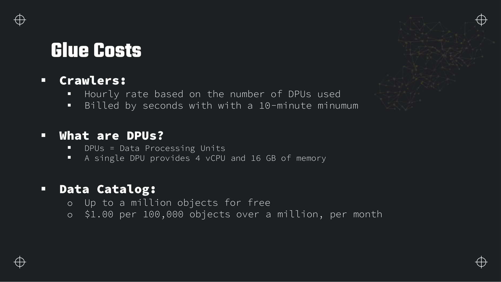
Crawlers
- Billed by the second based on the number of DPUs the crawler uses.
- 10-minute minimum per crawl run — a 30-second crawl still bills for 10 minutes.
- Crawlers infer schema and register tables/partitions in the Glue Data Catalog; they do not transform data.
Data Catalog storage and requests
- First 1 million objects (tables, partitions, databases, connections) stored free per month.
- Above that: $1.00 per 100,000 objects per month.
- API requests to the catalog (GetTable, GetPartitions, etc.) have their own per-request pricing at high volume; normal pipeline usage stays negligible.
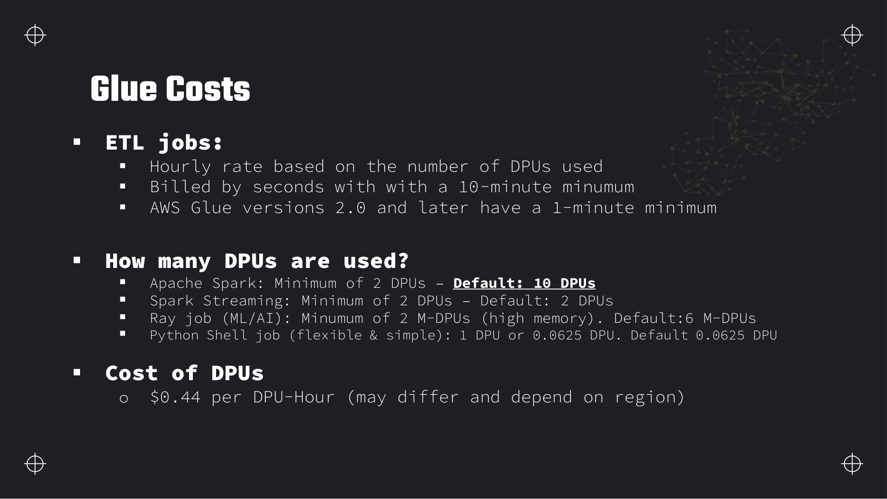
ETL jobs
| Job type | Min DPUs | Default DPUs | Typical use |
|---|---|---|---|
| Apache Spark ETL | 2 | 10 | Large-scale batch transforms |
| Spark Streaming ETL | 2 | 2 | Micro-batch streaming from Kinesis or Kafka |
| Ray | 2 M-DPUs | 6 M-DPUs | ML/AI parallel workloads (memory-optimised M-DPUs) |
| Python Shell | 0.0625 (1/16 DPU) | 0.0625 | Lightweight scripts, no Spark cluster |
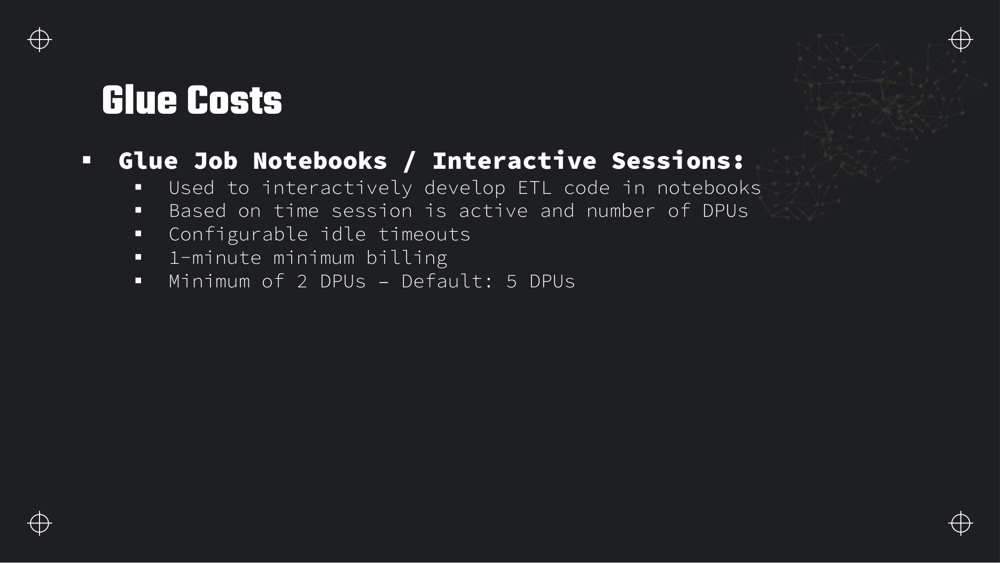
DataBrew and Data Quality
- DataBrew interactive sessions: billed per session-minute while a project is open (similar idle-timeout discipline as Glue notebooks).
- DataBrew jobs: billed in DPU-minutes when a recipe job runs over a dataset.
- Glue Data Quality: ruleset evaluation runs as part of a Glue job or crawler and inherits that job's DPU billing; storing quality results in the catalog is included in catalog object counts.
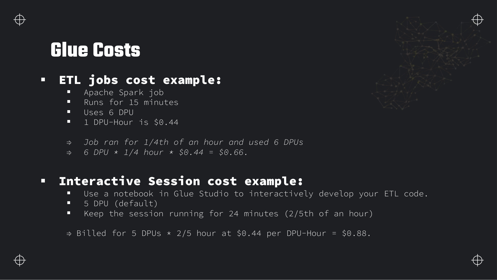
DPUs × hours × $0.44. A 15-minute job on 6 DPUs = 6 × 0.25 × 0.44 = $0.66. Right-sizing DPUs and worker count is the main lever after partition pruning.AWS Budgets
Glue DPU-hours add up fast on a study account. AWS Budgets lets you set spending thresholds and get email or SNS alerts before the bill surprises you. Section 1 walked through creating a 5 USD budget; here is what the service actually offers.
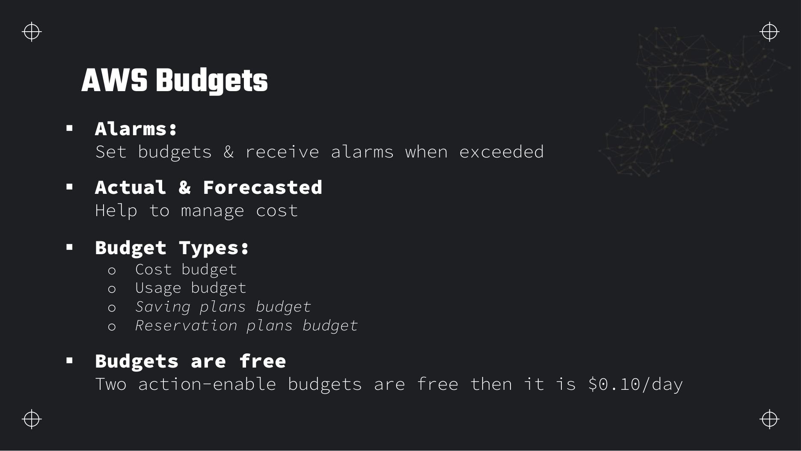
Budget types
| Type | What it tracks | Example alert |
|---|---|---|
| Cost budget | Actual or forecasted spend in dollars | Email when forecast exceeds $20 this month |
| Usage budget | Service usage quantity (hours, GB, requests) | Alert when Glue DPU-hours exceed 100 |
| Savings Plans budget | Utilisation of a Savings Plan commitment | Alert when utilisation drops below 80% |
| Reservation budget | Reserved Instance or capacity utilisation | Alert when RI coverage falls |
Actual vs forecast alerts
Actual alerts fire when spend or usage has already crossed the threshold — good for hard stops. Forecasted alerts use AWS's projection of end-of-month spend based on current run rate — they give you days of warning on a climbing Glue bill. Use both: forecast at 80% for early warning, actual at 100% for confirmation.
Budget actions
Budget actions automate a response when a threshold is breached: attach an IAM policy that denies glue:StartJobRun, stop EC2 instances, or notify an SNS topic that triggers a runbook. The first two action-enabled budgets are free; additional ones cost $0.10 per day each.
Cost Explorer and anomaly detection
AWS Cost Explorer visualises spend by service, tag and time — use it to see whether Glue, Athena or Redshift drove last month's spike. Cost Anomaly Detection (part of Cost Explorer) learns your baseline and alerts on unusual daily spend without you setting a fixed threshold — useful when you forget an interactive Glue session.
Stateful vs stateless ingestion
A stateless processor treats every event independently — no memory of what came before. A stateful processor remembers prior events so it can skip already-handled data, maintain windows, or deduplicate. The distinction matters directly for Glue job bookmarks and for exam questions about incremental loads.
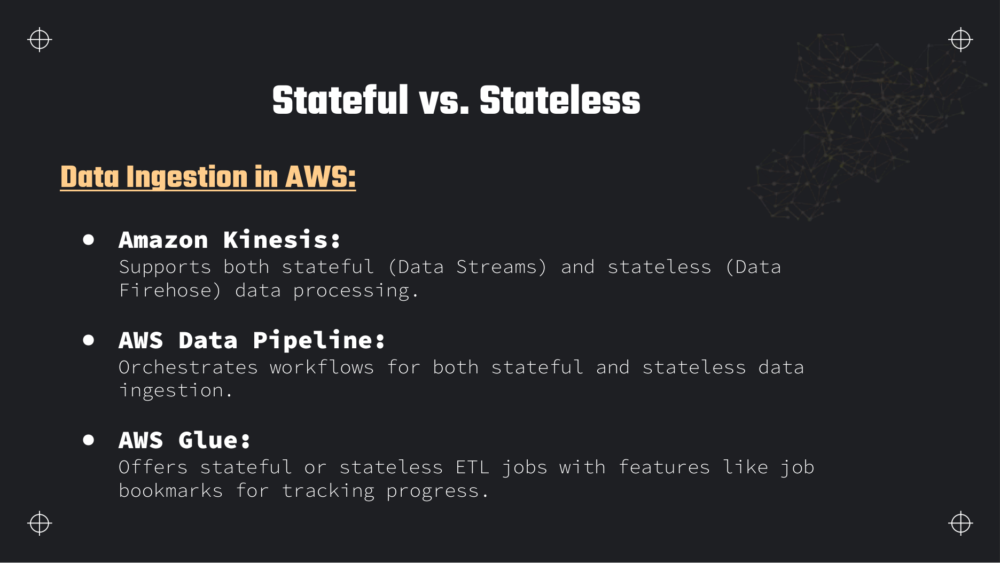
Glue job bookmarks
Job bookmarks persist state between runs so a Glue job processes only new data since the last successful run. Glue tracks which files or partitions have been read from S3 (and similar sources) and skips them on the next invocation. That makes the job incremental and, combined with deterministic writes, idempotent.
- Enable with
--job-bookmark-option job-bookmark-enableon the job, orjob.init()/ bookmark keys in the script. - State is stored in a bookmark table in the Glue Data Catalog keyed by job name and source.
- Reset a bookmark when you need a full reprocess: console → Job → Action → Reset job bookmark, or delete the bookmark entry via the Glue API. Without resetting, changed source files that were already bookmarked are skipped.
- Bookmarks work with S3, JDBC, DynamoDB and other supported sources — not with every connector.
JobRun starts fresh unless you add bookmarks, checkpoint directories (streaming), or external state. Exam questions about "process only new files daily" → Glue job with bookmarks enabled, not a bare Spark script without tracking.Glue ETL transformations
AWS Glue is a managed ETL service: extract from JDBC databases, S3, Kinesis, DynamoDB and Redshift; transform with built-in operations or custom PySpark/Scala; load back to the same family of targets. Format conversion (CSV ↔ Parquet ↔ JSON ↔ XML) is a first-class transform.
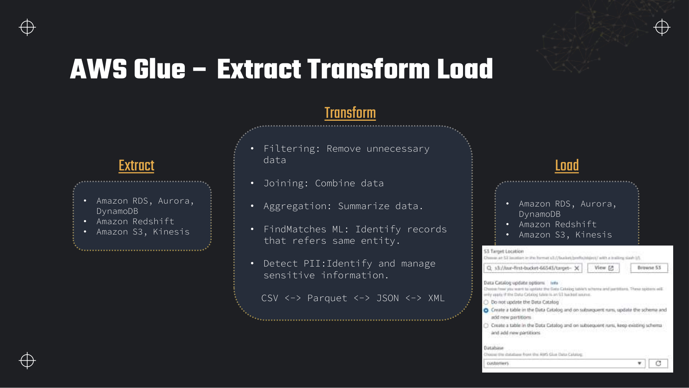
Built-in transform catalogue
- Filter — drop rows matching a condition.
- Join — combine two DynamicFrames on keys.
- Aggregate / Group — summarise by key columns.
- Map / ApplyMapping — rename and cast columns to a target schema.
- FindMatches — ML transform to identify duplicate entities without exact keys.
- Detect PII — flag or mask sensitive columns.
- Relationalize — flatten nested structs into relational tables.
DynamicFrame vs Spark DataFrame
Glue's native type is the DynamicFrame — a schema-flexible dataset that handles semi-structured data and evolving schemas better than a strict Spark DataFrame. Convert freely: dyf.toDF() and DynamicFrame.fromDF(df, glueContext, "name").
ResolveChoice resolves columns where the same field has conflicting types across records (e.g. sometimes string, sometimes int). It picks a resolution strategy: make_cols, cast, make_struct, or project. Without it, downstream writes can fail on heterogeneous JSON.
Pushdown predicates and partition pruning
When reading from the catalog, pass a pushdown predicate so the scan skips irrelevant partitions before Spark sees the data:
import sys
from awsglue.transforms import *
from awsglue.utils import getResolvedOptions
from pyspark.context import SparkContext
from awsglue.context import GlueContext
from awsglue.job import Job
args = getResolvedOptions(sys.argv, ["JOB_NAME"])
sc = SparkContext()
glueContext = GlueContext(sc)
job = Job(glueContext)
job.init(args["JOB_NAME"], args)
# Read only January 2024 partitions — Glue skips other S3 prefixes
dyf = glueContext.create_dynamic_frame.from_catalog(
database="dea_lab",
table_name="customers_raw",
push_down_predicate="year='2024' AND month='01'",
transformation_ctx="customers_raw"
)
# Drop duplicate row (row 11 duplicates row 6 in customers.csv)
deduped = DynamicFrame.fromDF(
dyf.toDF().dropDuplicates(["ID", "Name", "Email"]),
glueContext, "deduped"
)
# Write partitioned Parquet to curated/
glueContext.write_dynamic_frame.from_options(
frame=deduped,
connection_type="s3",
connection_options={
"path": "s3://dea-lab-ab-4821/curated/customers/",
"partitionKeys": ["State"]
},
format="parquet",
transformation_ctx="write_curated"
)
job.commit()Glue Studio visual editor
Glue Studio provides a drag-and-drop canvas for the same transforms — each node compiles to PySpark. Use it for prototyping; export the script for production CI/CD. Visual ETL, Notebook and Script editor are the three authoring modes (see slide 54 in job types).
Glue Data Quality (DQDL)
Data Quality Definition Language (DQDL) expresses rulesets such as Completeness "email" > 0.95, UniqueValueCount "id" = 1, or RowCount > 0. Attach a ruleset to a Glue job or crawler; failed rules can block the job or land results in CloudWatch and the catalog. This is the programmatic counterpart to DataBrew's visual profiling.
Glue Workflows and orchestration
Glue Workflows orchestrate multi-step pipelines — chains of crawlers, jobs and triggers — with a visual graph and run history. They are ideal when every step is Glue-native; for cross-service pipelines, compare with EventBridge and Step Functions.
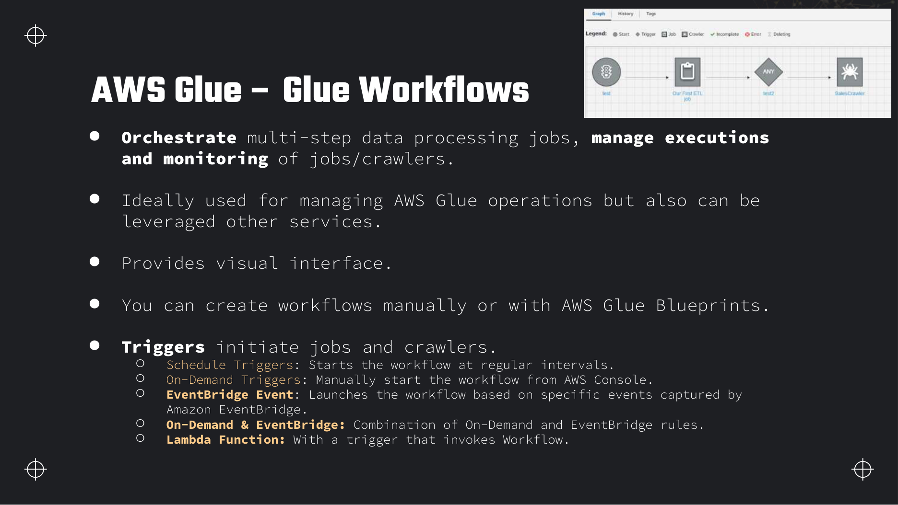
Trigger types
| Trigger | Starts when |
|---|---|
| Schedule | Cron expression — nightly batch |
| On-demand | Manual start from console or API |
| EventBridge event | Matching event on the default or custom bus (S3 object created, job state change) |
| Conditional | After another job/crawler succeeds or fails (ANY / ALL logic) |
| Lambda | Custom Lambda invokes StartWorkflowRun |
Glue triggers vs EventBridge vs Step Functions
| Orchestrator | Best for | Limitation |
|---|---|---|
| Glue Workflows | Glue jobs + crawlers only; visual monitoring in Glue console | Does not natively call Lambda, SNS or external APIs as steps |
| Amazon EventBridge | Event routing: S3 upload → start Glue job; decoupled pub/sub | No built-in retry/state machine — pair with targets that handle failures |
| AWS Step Functions | Multi-service workflows with retries, catch, parallel branches, human approval | More setup; bills per state transition |
Full integration patterns — SQS, SNS, API Gateway — are in Section 15. Rule of thumb: Glue-only DAG → Workflows; single event → one action → EventBridge; complex branching across services → Step Functions.
Typical Glue Workflow run
Glue job types, workers and versions
Pick the job type from workload shape: heavy Spark batch, micro-batch streaming, lightweight Python, or Ray for parallel Python ML. Then pick worker type, Glue version and standard vs flex execution.
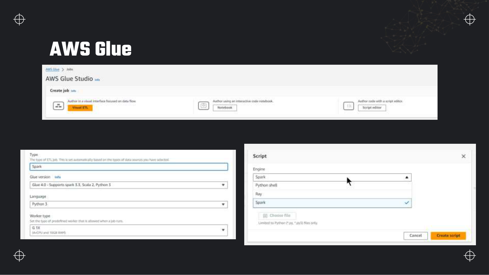
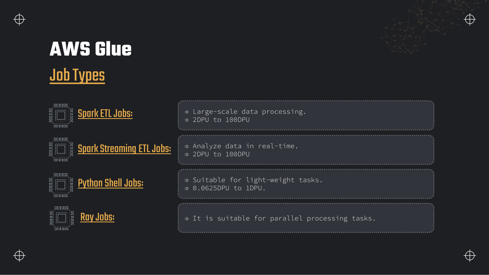
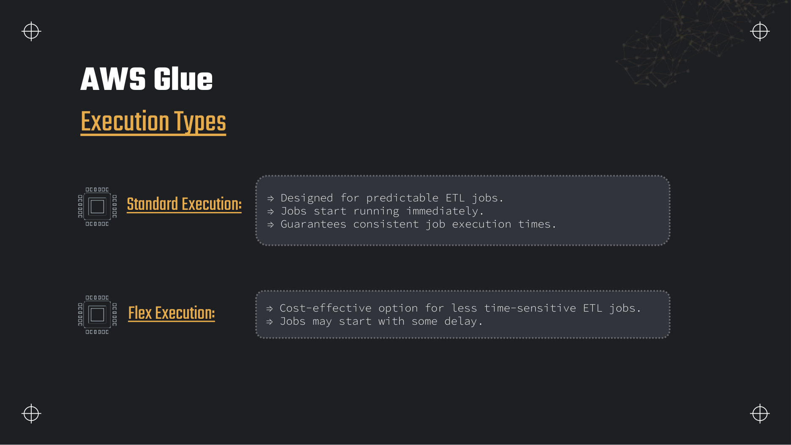
Worker types (Spark jobs)
| Worker | vCPU / memory | Notes |
|---|---|---|
| G.1X | 4 vCPU, 16 GB | Default; equals 1 DPU |
| G.2X | 8 vCPU, 32 GB | 2 DPUs; more memory per executor |
| G.4X | 16 vCPU, 64 GB | 4 DPUs; large shuffles/joins |
| G.8X | 32 vCPU, 128 GB | 8 DPUs; very large in-memory ops |
Worker count × worker DPU size = total DPUs. A job with 5 × G.2X workers uses 10 DPUs.
Glue version → Spark version mapping
| Glue version | Spark | Python |
|---|---|---|
| Glue 4.0 | 3.3 | 3.10 |
| Glue 3.0 | 3.1 | 3.7 |
| Glue 2.0 | 2.4 | 3.7 |
| Glue 1.0 | 2.4 | 2.7 |
New jobs should target Glue 4.0 for the 1-minute billing minimum and current Spark features.
Spark Streaming ETL
Reads from Kinesis Data Streams, Kafka (MSK) or other streaming sources in micro-batches. Default window size is 100 seconds (windowSize parameter). Uses Spark Structured Streaming under the hood with Glue-managed infrastructure. Enable checkpointing on S3 for failure recovery.
Python Shell job snippet
import sys
import boto3
import pandas as pd
from awsglue.utils import getResolvedOptions
args = getResolvedOptions(sys.argv, ["input_path"])
df = pd.read_csv(args["input_path"])
row_count = len(df)
print(f"Rows read: {row_count}")
# Optional: emit custom metric
cw = boto3.client("cloudwatch")
cw.put_metric_data(
Namespace="DEA/Lab",
MetricData=[{"MetricName": "CsvRowCount", "Value": row_count, "Unit": "Count"}]
)Start a job from the CLI
aws glue start-job-run \
--job-name dea-customers-etl \
--arguments '{
"--job-bookmark-option": "job-bookmark-enable",
"--push_down_predicate": "State=NY"
}'
# Response: { "JobRunId": "jr_abc123..." }Glue connections and VPC access
A Glue connection stores JDBC URL, credentials (often from Secrets Manager) and network info for private databases. To reach RDS in a private subnet, create the connection with a VPC, subnet and security group; Glue creates elastic network interfaces in that subnet. The job's IAM role needs ec2:CreateNetworkInterface permissions. Without a connection, only public endpoints and S3-native sources work out of the box.
Glue Schema Registry
Central registry for Avro, JSON Schema and Protobuf schemas with versioning and compatibility checks (backward/forward/full). Producers register schemas; consumers (Glue streaming jobs, MSK, Kinesis) validate payloads at ingest. Prevents "silent" schema drift from breaking downstream Parquet tables.
Partitioning data on S3
Partitioning splits data into directory prefixes so queries and ETL jobs read only the subset they need. On AWS the standard is Hive-style keys: year=2024/month=01/day=15/.
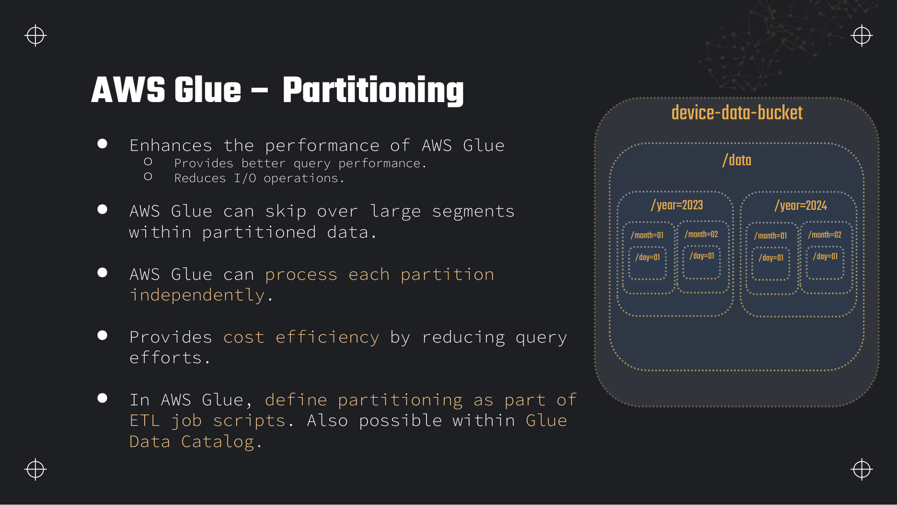
device-data-bucket worked example. Prefix layout /data/year=2023/month=01/day=01/ lets Athena and Glue skip entire year or month subtrees when the query filters on those columns.Why partition
- Query performance — Athena and Redshift Spectrum scan fewer files.
- Reduced I/O — Glue and Spark list and read only matching prefixes.
- Independent processing — backfill one month without touching others.
- Cost — less data scanned means lower Athena and shorter Glue runs.
Define partitions in the job and the catalog
Pass partitionKeys in write_dynamic_frame (see transformation code above) and ensure the crawler or ALTER TABLE ADD PARTITION registers them in the Data Catalog. Mismatch between S3 paths and catalog partition columns breaks pruning.
Glue DataBrew
AWS Glue DataBrew is a visual data-preparation service for analysts and engineers who prefer clicks over PySpark. It reads from S3, JDBC and the Data Catalog; writes cleaned data back to S3 or Redshift; and exposes 250+ built-in transformations.
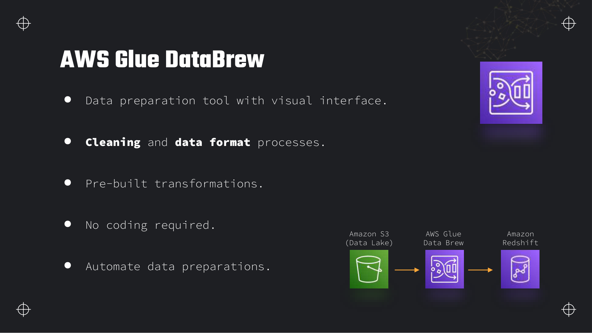
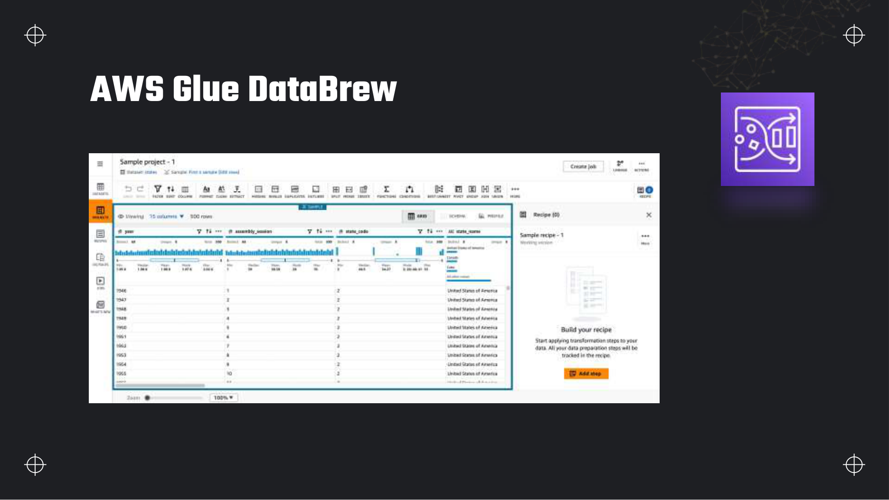
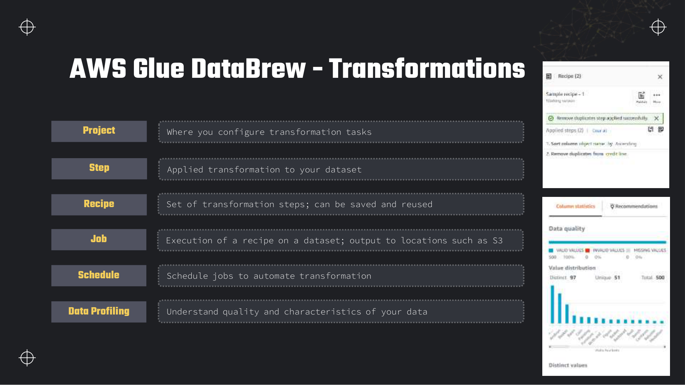
Object model
| Object | Role |
|---|---|
| Dataset | Pointer to S3, JDBC or catalog table input |
| Project | Interactive workspace where you configure transforms |
| Step | One applied transformation (sort, dedupe, split column) |
| Recipe | Saved, reusable ordered list of steps |
| Job | Batch execution of a recipe over a dataset → S3/Redshift output |
| Schedule | Cron automation for jobs |
Transformation categories from the deck
Filter and column ops
- Filter — keep rows matching conditions
- Split — split a column on a delimiter
- Sort — ascending/descending order
- Date/Time conversions — parse and reformat timestamps
- Count distinct — unique value counts per column
Shape and combine
- Nest / Unnest — NEST_TO_MAP, NEST_TO_ARRAY, NEST_TO_STRUCT, UNNEST_ARRAY
- Pivot / Unpivot — rows to columns and back
- Transpose — swap rows and columns
- Group — aggregate by keys
- Join / Union — combine datasets
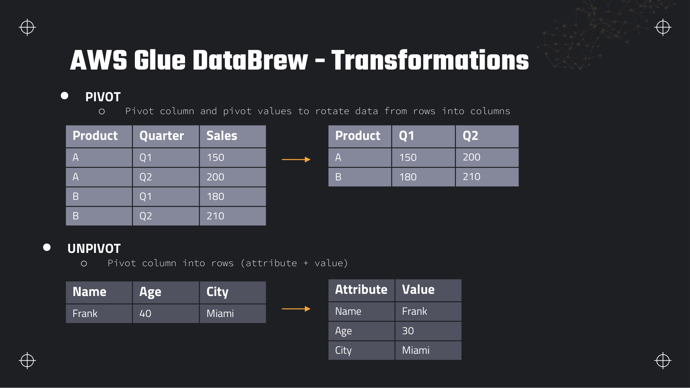
Deeper detail and exam edge cases
Glue billing floors, worker sizing, bookmark failure modes, and operational gotchas that turn a cheap batch job into a recurring DPU-hour leak.
Limits and quotas that decide answers
| Limit | Value | Adjustable? | Why it matters |
|---|---|---|---|
| DPU-hour rate (us-east-1) | ~0.44 USD per DPU-hour | Flex execution lowers rate; Standard starts immediately | Exam cost maths: DPUs × hours × rate, subject to minimum duration. |
| Glue 2.0+ job minimum bill | 1 minute per run | No (hard) | 45-second Spark job still bills one minute — not zero. |
| Glue 0.9 / 1.0 / crawler minimum bill | 10 minutes per run | No (hard) | One-minute crawler run bills ten minutes — major exam trap vs Glue 4.0 Spark jobs. |
| Spark ETL minimum capacity | 2 DPUs (typically 2 × G.1X workers) | No (hard) at job level | Cannot run a one-DPU Spark cluster — Python Shell is the small-job escape hatch. |
| Python Shell minimum | 0.0625 DPU (1/16 DPU) | No (hard) | Cheapest Glue compute for tiny scripts — not the same worker types as Spark. |
| G.1X worker | 4 vCPU, 16 GB RAM (= 1 DPU) | Choose worker type/count | Default for general ETL; scale out workers before jumping to G.8X unless memory-bound. |
| G.2X / G.4X / G.8X | 2 / 4 / 8 DPUs each; 32 / 64 / 128 GB RAM | Choose per shuffle/join size | Larger workers reduce shuffle over network; do not use G.8X for 100 MB files. |
| Spark Streaming ETL minimum | 2 DPUs always on while running | No (hard) | Micro-batch streaming is never sub-2-DPU — cost is continuous, not per batch file. |
| Concurrent job runs (default) | Soft quota — varies by account (often tens per Region) | Yes — Service Quotas request | Workflow fan-out hitting limit queues runs — design sequential stages or request increase. |
| Data Catalog free tier | 1 million objects/month | Reduce partition objects | Bookmark state and partitions count toward storage. |
| Catalog above free tier | ~1 USD per 100,000 objects/month | Partition projection in Athena reduces catalog churn | High partition cardinality affects both Athena and catalog bills. |
| Flex execution trade-off | Lower DPU rate; delayed start possible | Choose per job | Nightly batch OK; SLA-bound pipeline → Standard. |
| Spark UI / continuous logging | Extra S3 storage + small compute overhead | Disable in production after tuning | Debug feature left on writes logs to S3 indefinitely if lifecycle missing. |
What you actually pay for
| Billed dimension | Unit | How to spend less |
|---|---|---|
| Spark / streaming / Ray jobs | DPU-hour (1-min or 10-min floor) | Right-size workers; pushdown predicates; Flex for non-urgent; Glue 4.0 not 1.0. |
| Crawler | DPU-hour, 10-min minimum | Crawl once; incremental folders only; replace with job-written partitions. |
| Interactive sessions / notebooks | DPU-hour while session open | Idle timeout; stop session when done — overnight notebook ≈ 5 DPUs × hours × 0.44. |
| DataBrew interactive project | Per session-minute (node-based) | Close projects; publish recipe and run batch job instead of leaving UI open. |
| DataBrew recipe job | DPU-minutes per job run | Schedule jobs; avoid re-running full dataset when recipe change is small. |
| Data Catalog API requests | Per request above free allowance at high volume | Normal pipelines stay negligible; millions of GetPartitions calls need partition indexes. |
| Data Quality (DQDL) evaluation | Inherits hosting job/crawler DPU-hours | Run rules on partitioned slices; fail-fast rules before heavy transforms. |
| Job bookmark storage | Counts as catalog objects | Negligible at lab scale; included in million-object free tier. |
| ENI / NAT for VPC JDBC | Data processing + NAT hourly if no S3 gateway endpoint | S3 VPC gateway endpoint on Glue subnet; avoid NAT for S3-only jobs. |
Traps that catch people
- 10-minute minimum on crawlers — Students run crawlers repeatedly while debugging schema. Each run bills 10 minutes minimum — use the console table preview or one crawl plus manual DDL fixes.
- Glue Studio overwrites script — Editing the visual graph regenerates the script and can wipe hand-written PySpark. Export to Git; treat Studio as prototype, script editor as source of truth for production.
- Job bookmark skips corrected files — Bookmarks track processed paths. If a source file is replaced in place with fixed data, the bookmark skips it. Reset bookmark or write to new keys.
- Bookmark disabled mid-pipeline — Re-enable after a full load without reset causes duplicate processing of all files — or skip if state inconsistent. Document bookmark resets in runbooks.
- Schema drift breaks Parquet write — New JSON field types conflict across files. ResolveChoice or explicit schema enforcement before write; Schema Registry for streaming sources.
- Flex for SLA jobs — Flex saves money but queue delay violates "complete by 6 AM" requirements. Exam scenarios with deadlines → Standard execution.
- Streaming ETL left running — Minimum 2 DPUs continuous. Forgetting to stop a lab streaming job bills like a small cluster 24/7.
- Auto-scaling without cap —
--enable-auto-scalinghelps skewed workloads but can spin to max workers on bad joins. Set worker limits and fix data skew first. - DataBrew vs Spark duplicate — Running both on the same dataset doubles DPU spend. Pick DataBrew for profiling/cleaning, Spark for complex joins — chain them, do not parallel duplicate.
- DQDL blocking without sampling — Full-table quality on billions of rows every run adds DPU time. Scope rules to new partitions or sample for monitoring rules.
Troubleshooting playbook
| Symptom | Most likely cause | What to check / fix |
|---|---|---|
| Job succeeds but no new rows in output | Bookmark skipped all sources as already processed | Glue console → Job → Bookmarks; reset if full reload needed; verify new files use new keys. |
| Duplicate rows after job retry | Bookmark disabled or append-only write mode | Enable bookmark; use overwrite partition; MERGE pattern in Spark for idempotent loads. |
AnalysisException schema mismatch | Schema drift in source JSON/CSV | Sample failing files; ResolveChoice; enforce schema in DynamicFrame; Schema Registry for Kafka. |
| Job timeout with low CPU | Single large shuffle; straggler partition; too few workers | Spark UI (enable temporarily); increase workers or G.2X; fix skew with salting/repartition. |
| JDBC connection timeout | Missing VPC connection or security group | Connection ENI in correct subnet; RDS SG allows Glue SG inbound; Secrets Manager creds valid. |
| Crawler adds duplicate tables | Multiple crawlers same path different databases | Consolidate crawlers; use single database naming convention. |
| Flex job started hours late | Expected Flex queue behaviour | CloudWatch job run StartedOn vs scheduled time; switch to Standard for SLA. |
| Data Quality rules always fail | Threshold too tight or wrong column after ApplyMapping | DQDL results in CloudWatch; validate column names post-transform. |
| Script changes lost after Studio save | Visual save regenerated code | Version script in Git; disable auto-regenerate or edit in script tab only. |
Production patterns
Production Glue pipelines run Glue 4.0 Spark jobs on schedules or EventBridge triggers, with bookmarks enabled for incremental S3 ingest, pushdown predicates for the processing window, and Parquet writes partitioned by date. Crawlers run on initial onboarding only — ongoing partitions are registered by the job via the API or sync operations. DataBrew handles analyst-driven cleaning recipes published as jobs; Spark owns joins, deduplication at scale, and VPC JDBC extracts. Data Quality rulesets gate curated loads before Athena exposes tables to consumers.
Incremental Glue batch (production default)
Anti-pattern: 10-DPU default job reading the entire multi-TB table nightly without predicate because "it worked in dev on 11 rows". Production uses date pushdown, worker auto-scaling with a cap, and Flex when the SLA allows queue delay.
aws glue start-job-run \
--job-name dea-customers-etl \
--arguments '{
"--job-bookmark-option": "job-bookmark-enable",
"--enable-auto-scaling": "true",
"--enable-continuous-cloudwatch-log": "false",
"--enable-spark-ui": "false"
}'Where this fits with the rest of the exam
Glue is the default batch transform answer and the glue between ingestion, catalog, and query layers — exam Domain 1 weighting makes this section high leverage.
- Section 2 (Data Ingestion) — S3 landing layout and catalog concepts this section operationalises.
- Section 3 (Athena) — consumers of curated Glue output; CTAS limits push heavy transforms back to Glue.
- Section 5 (Lambda) — event-driven lightweight transforms vs Glue for Spark-scale work.
- Section 6 (Streaming) — Spark Streaming ETL from Kinesis/MSK; bookmarks differ from streaming checkpoints.
- Section 12 (EMR) — when custom Spark, long clusters, or exotic libraries beat serverless Glue.
- Section 15 (Step Functions) — multi-service orchestration when Glue Workflows are too narrow.
Interview questions
Answer each one out loud before opening it.
How is AWS Glue priced, and what is the difference between the 1-minute and 10-minute minimum billing?Cost
Glue bills in DPU-hours at a regional rate (about $0.44/DPU-hour in us-east-1). One DPU is 4 vCPU and 16 GB RAM. Crawlers and Glue 1.0-style workloads have a 10-minute minimum per run. Glue 2.0+ ETL jobs, streaming, Ray, Python Shell and interactive sessions use a 1-minute minimum. Cost = DPUs allocated × runtime in hours × rate, subject to the floor.
The Data Catalog stores the first million objects free; above that it is about a dollar per 100,000 objects per month. DataBrew sessions and jobs add their own DPU-minute charges.
What are Glue job bookmarks and when would you reset them?Design
Job bookmarks persist state between runs so Glue skips files or partitions already processed — making batch ingestion incremental. Enable with --job-bookmark-option job-bookmark-enable. State lives in the Data Catalog keyed by job and source.
Reset when you need a full reload: schema change requiring reprocessing all history, a bug corrupted curated output, or source files were replaced in place. Reset via console (Reset job bookmark) or API; until reset, previously seen paths are skipped.
When do you choose Python Shell over a Spark ETL job?Comparison
Python Shell suits lightweight work: single-file CSV conversion, calling boto3 APIs, small pandas transforms, under ~16 GB data on 1 DPU. It starts faster and costs a fraction of a Spark cluster (0.0625 DPU minimum).
Spark ETL is for distributed joins, large shuffles, complex transforms, DynamicFrames, and anything needing more than one machine. If the question mentions "large-scale", "join multiple sources" or "partitioned Parquet at TB scale", Spark wins.
Explain standard vs flex execution for Glue jobs.Cost
Standard starts immediately and delivers predictable runtime — use for SLA-bound or time-sensitive pipelines. Flex queues the job and may delay startup in exchange for a lower DPU-hour price — fine for nightly batches where a few minutes of queue time does not matter.
Flex is an exam cost optimisation answer when the scenario explicitly says processing can wait or is not time-critical.
What is a pushdown predicate and why does it save money?Performance
A pushdown predicate is a filter expression passed to create_dynamic_frame.from_catalog (or the JDBC equivalent) so Glue resolves it against catalog partition metadata before reading S3. Only matching prefixes are listed and scanned.
Without it, Spark reads every file under the table root. With it, Athena-style partition pruning happens at ingest time — fewer bytes read, shorter job, lower DPU bill and less downstream work.
DynamicFrame vs DataFrame — when do you use ResolveChoice?Fundamentals
DynamicFrame is Glue's schema-flexible abstraction — it handles sparse and evolving schemas (JSON logs, catalog tables with mixed types). DataFrame is Spark's strict typed API — faster for known schemas and rich SQL.
ResolveChoice is needed when the same column has conflicting types across records (string vs int). It merges or casts variants into a consistent schema before mapping or writing to Parquet, which requires uniform types per column.
How would you orchestrate a crawler followed by an ETL job on a schedule?Architecture
Inside Glue-only scope: create a Glue Workflow with a schedule trigger → crawler step → conditional trigger on crawler success → Spark job. Monitor in the Workflows graph.
Alternatives: EventBridge rule on a cron schedule targeting StartJobRun (two separate rules if crawler and job are independent), or Step Functions if later steps include Lambda, SNS or branching logic. For pure Glue, Workflows are least operational overhead.
What is the device-data-bucket partitioning example teaching?Exam
It demonstrates Hive-style S3 prefixes: year=YYYY/month=MM/day=DD/. Queries filtering on year and month skip unrelated prefixes — less I/O for Glue and Athena, independent backfills per day, lower scan cost.
Partitions must be declared in the Data Catalog (crawler or manual) and match the path keys used in partitionKeys on write. High-cardinality columns (user ID) make bad partition keys; date columns are the classic choice.
Glue DataBrew vs a Glue Spark job — how do you decide?Comparison
DataBrew for visual profiling, 250+ one-click transforms, analyst-friendly recipes, and scheduled cleaning jobs without maintaining PySpark. Spark ETL for complex multi-source joins, custom code, job bookmarks, streaming, VPC JDBC at scale, and fine-grained performance tuning.
DataBrew output still lands on S3 for Athena; many teams DataBrew-clean then Glue-model, or use Data Quality rulesets in Spark jobs for governance.
A Glue job reading RDS in a private subnet fails with connection timeout — what do you check?Troubleshooting
Verify a Glue connection with the correct VPC, subnet and security group; the job must reference that connection. The job role needs ENI permissions. The RDS security group must allow inbound from the Glue connection's security group on the DB port.
Also check Secrets Manager credential rotation, JDBC URL format, and that the subnet has a route to the database (same VPC or peered). Missing S3 endpoint access on the ENI causes a different failure — job connects to DB but cannot write output.
Hands-on practice
Free tier where possible. Delete everything at the end of each task.
-
Create a Glue crawler on your lab bucket's
AWS Glue → Data catalog → Crawlers → Create crawlerraw/customers/prefix, run it, and confirm the table appears in the Data Catalog with correct column types.Database
dea_labcontains tablecustomerswith seven columns; Athena canSELECT COUNT(*) FROM dea_lab.customersand returns 11.Show stepsConsole
- Glue → Crawlers → Create crawler. Name
customers-raw-crawler. - Data source: S3 path
s3://dea-lab-ab-4821/raw/customers/. - IAM role: create
AWSGlueServiceRole-dea-labwith S3 read on the bucket. - Target database: create
dea_lab. Schedule: on demand. - Run crawler → verify table in Tables.
Cleanup: delete crawler and table if you rebuild later; catalog objects are free under one million.
- Glue → Crawlers → Create crawler. Name
-
Author a Glue Spark ETL job that deduplicates
Glue Studio → Visual ETL → Create jobcustomers.csvand writes Parquet partitioned byStatetocurated/customers/. Run it once with job bookmark disabled, then enable bookmarks and add a new file toraw/.Curated prefix contains
State=NY/etc. with Parquet files; second run with bookmark skips the original file and processes only the new one.Show stepsConsole + CLI
- Create job from catalog source
dea_lab.customers, transform Drop duplicates on ID+Email, sink to S3 Parquet with partition key State. - Job details: Glue 4.0, G.1X, 2 workers, Job bookmark = Enable.
- Run job, inspect
s3://dea-lab-ab-4821/curated/customers/.
aws glue start-job-run --job-name dea-customers-etl \ --arguments '{"--job-bookmark-option":"job-bookmark-enable"}'Cleanup: delete job runs output if unneeded; stop interactive sessions.
- Create job from catalog source
-
Open DataBrew, create a project on the customers dataset, apply Remove duplicates and Filter State equals NY, publish a recipe and run a job to
AWS Glue → DataBrew → Projects → Create projectstaging/customers-ny/.Staging prefix holds only New York rows without the duplicate Sarah Smith row.
Show stepsConsole
- DataBrew → Datasets → New dataset from S3
raw/customers/customers.csv. - Create project → Recipe → Add step Remove duplicates → Add step Filter
State = "NY". - Publish recipe → Create job → output to
s3://dea-lab-ab-4821/staging/customers-ny/. - Run job; download result and verify row count.
Cleanup: delete DataBrew job, recipe, project and dataset; DataBrew sessions bill while open.
- DataBrew → Datasets → New dataset from S3
-
Add a usage budget for Glue: alert when forecasted Glue DPU usage exceeds 10 DPU-hours in the month.
Billing → Budgets → Create budget → Usage budgetBudget shows Glue service filtered; test notification appears when you run several jobs.
Show stepsConsole
- Budgets → Create → Usage budget → service
Glue, metric DPU-Hours, amount 10. - Alert: forecasted > 80% → your email.
Budgets are free; no cleanup needed.
- Budgets → Create → Usage budget → service
Recap
- Glue bills DPU-hours (~$0.44/DPU-hr); Glue 2.0+ jobs have 1-min minimum, crawlers 10-min minimum.
- 1 DPU = 4 vCPU + 16 GB; Spark default 10 DPUs, Python Shell default 0.0625 DPU.
- Data Catalog: first 1M objects free; job bookmarks make ingestion stateful and incremental.
- AWS Budgets: cost vs usage vs RI/SP budgets; forecast alerts before actual; first two action budgets free.
- DynamicFrame + ResolveChoice for messy schemas; pushdown predicates for partition pruning.
- Job types: Spark batch, Spark Streaming (100s default window), Python Shell, Ray; Standard vs Flex execution.
- Workers G.1X–G.8X; Glue 4.0 → Spark 3.3; connections + VPC for private JDBC.
- Partition S3 as
key=value; register in catalog; write withpartitionKeys. - Workflows orchestrate Glue-native DAGs; EventBridge/Step Functions for wider integration.
- DataBrew: Project → Recipe → Job; filter, join, pivot, nest/unnest without code.
- Data Quality uses DQDL rulesets; Schema Registry enforces Avro/JSON/Protobuf compatibility.